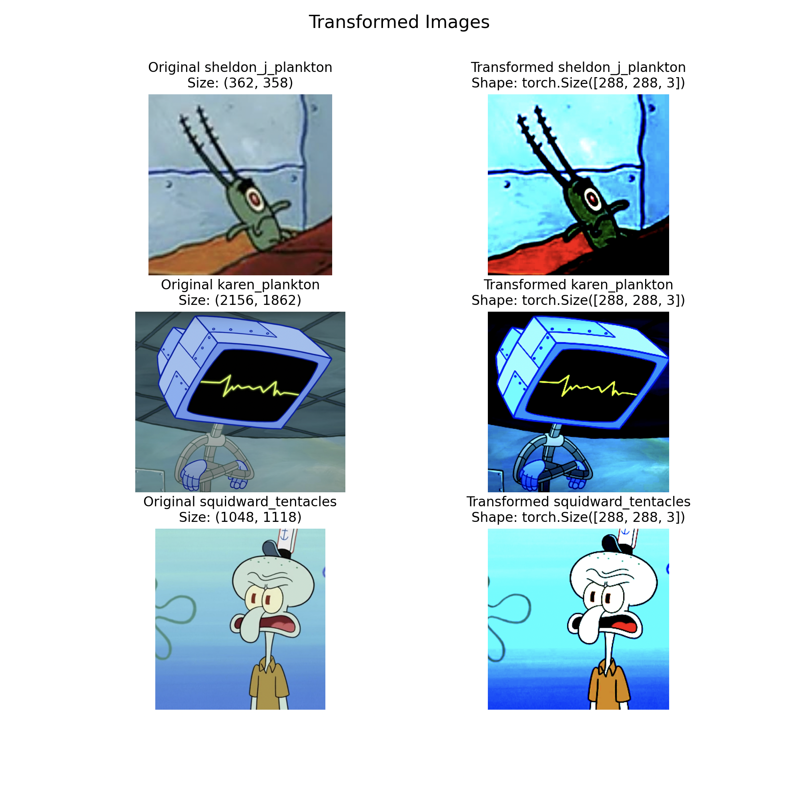
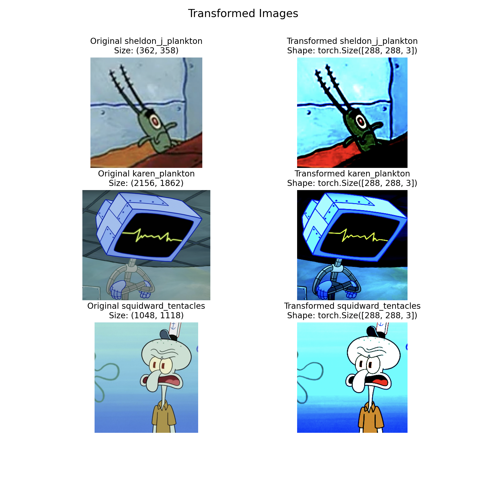

Github link
About
Completed a 24-hour Deep Learning with PyTorch course by David Bourke, along with additional lessons on their website. This course included the following topics:
- PyTorch Fundamentals
- PyTorch Workflow Fundamentals
- Neural Network Classification
- Computer Vision
- Custom Datasets
- Going Modular
- Transfer Learning
- Experiment Tracking
- Paper Replicating
- Model Deployment
With the skills I gained from this course, I developed my first PyTorch model. The model's purpose was to differentiate between various SpongeBob Squarepants characters, starting with a dataset containing 10 different characters.
I began by experimenting with different versions of the existing Tiny VGG, which is a lightweight convolutional neural network architecture. During these experiments, I made changes to parameters like the number of CNN layers, hidden layers, training epochs, learning rates, and dataset size.
With these initial methods, I achieved an accuracy of approximately 70%. The likely reason for this is that I had to manually collect my training data. This process involved watching SpongeBob episodes to observe the evolving styles of character drawings across various seasons. I took screenshots from different angles and situations in the episodes. Given the time-consuming nature of this task, I've managed to gather only 120 images per character thus far.
I needed either a much larger dataset, or needed to use transfer learning. Transfer learning is a suitable approach for this problem because the initial training on a vast dataset using a much more complex architecture equips the model with a general understanding of what different images look like. This understanding remains valuable, even when your dataset is relatively unrelated to the training data they initially used. By adding an additional classifier layer on top of the pre-trained model, you can quickly fine-tune the model to differentiate between specific classes, even with a smaller dataset, as was the case for me. Using transfer learning, my model was able to achieve an accuracy of over 98%.
In the process of creating my first model, I conducted experiments using PyTorch's pre-trained classification models 'EfficientNet_B0' and 'EfficientNet_B2.' Through these experiments, I observed that 'EfficientNet_B2' exhibited higher efficiency. This observation is supported by the loss curve, as indicated in the figure above, where the 'EfficientNet_B2' model achieved lower loss within the same training period. Notably, 'EfficientNet_B2' features a larger parameter count and was trained on a more extensive dataset.
Now that I've established a solid base model for my application, my next steps involve deploying the model for public access. I'm also considering expanding the number of characters I can classify, leveraging the benefits of transfer learning, which allows me to work with smaller datasets per character.


 
